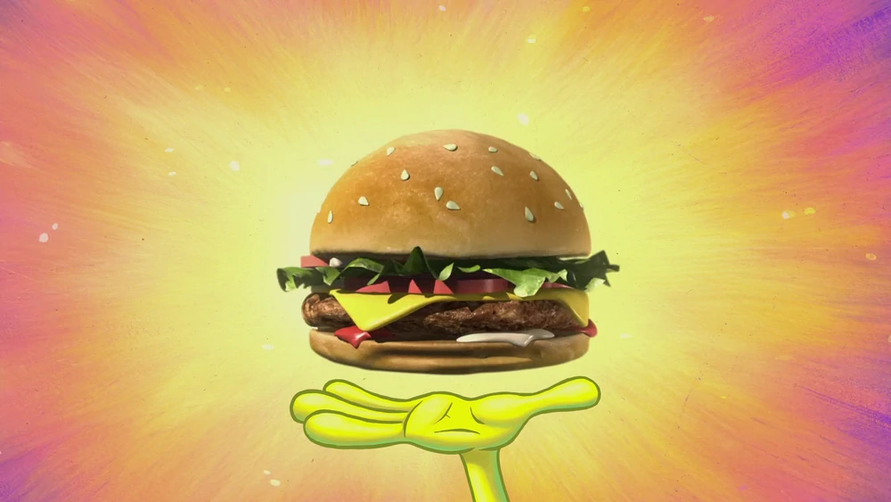

KRABBY PATTY

INGREDIENTS
- 1 Krabby Patty®™
- Sliced onions
- Sliced tomatoes
- Sliced cheese (American or Cheddar)
- Hamburger buns
- Ketchup, mayonnaise and mustard
- Sliced pickle
- Lettuce
DIRECTIONS
- Lay the Krabby Patty®™ on a grill for 5 minutes on each side.
- Lay the cheese on the Krabby Patty®™ and let melt for 2 minutes.
- Spread ketchup, mayonnaise and mustard on the buns.
- Lay the Krabby Patty®™ onto the buns.
- Add lettuce, onions and tomatoes.